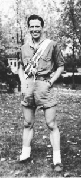

Frederick Charles Brems was born on January 2, 1919 at St. Mary's Hospital in Chicago to Frederick W. Brems (1887-1957) and Marie H. Brems (nee Kledzik) (1888-1957). He attended St. Genevieve Church Grammar School and DePaul Academy High School, and one year of college at Wright Junior College.
Fred's Scouting career began as a Charter Member of Troop 150 sponsored by St. Genevieve's Holy Name Society in 1931 and led by Scoutmaster William "Bill" Blair. He quickly rose through the ranks, holding the offices of Patrol Leader and Senior Patrol Leader which culminated in his receiving the rank of Eagle Scout on June 27, 1935. Scouts from the Northwest District of Chicago, under the direction of District Executive George M. Schnier attended Camp Checaugau on Big Blue Lake. Fred, being an exemplary camper, was inducted in the Order of the Arrow in 1932. He vividly recalls the Ordeal Ceremony during which a huge oval was formed on the Parade Grounds and the Indian Brave with a pine knot torch circled the oval searching for inductees. Meteu, with a firm tap on the shoulder called him forth, and laid a pine wreath around his neck and bade him to keep silent.
Fred worked on staff at Camp Stuart from 1936-1938 as the Assistant Naturalist and Naturalist. In 1938 he, along with fellow staffmen John Klem and George Mills were approached by Camp Director George Mills to work at Camp Belnap (Chicago Council's segregated camp for African American Scouts). Accepting the challenge with gusto, Fred and his companions worked with a provisional Troop of 35 Scouts and its Scoutmaster Eric King to provide the experience of a lifetime to these young Scouts who demonstrated their love of canoeing.
For his commitment to camping, Fred received the Vigil Honor on July 29, 1939 through Checaugau Chapter. His Vigil name is Wulamollessohalid or "He Who Makes Me Happy".
After his Owasippe days, Fred entered the U.S. Army on June 13, 1941. Beginning as Sergeant, his Boy Scout leadership skill quickly took over such that he was offered a position in Officer Candidate School. One year later, he was graduated as a Second Lieutenant and spent five years on active duty, one and a half years of which was as a tank platoon and tank company commander in the Second Armored Division in Germany and Belgium. He was well-respected by his men for his thoughtfulness and efficiency and was awarded a Bronze Star during and a Silver Star at the conclusion his active duty in Germany. For the next 19 years he continued in the Active Reserves and retired in January 1979 as a Lieutenant Colonel with 24 years of service.
Fred spent his career of 45 years in the paper industry, working at first for Marquette Paper company and later the Marquette Paper Division of the Jim Walter Paper Corporation as a General Manager. He met his first wife Helen Charette of Marinette, Wisconsin at the Nankin Restaurant in Chicago and was married in 1943. Their son, Frederick R. (Rick) Brems born in 1948 is here with us this evening. Helen passed away in 1985 after 43 years of marriage. He then met Margaret Walker while working at a 4th of July Picnic game booth and after a whirlwind romance were married in January 1987.
When asked about his guiding mantra, Fred simply replies, "The Vigil Honor was, no is, much present here and throughout life – personal integrity, industry, respect for others, and service to others."
Fred returned to his Creator on August 17, 2014 after a long and fulfilling life of cheerful service.